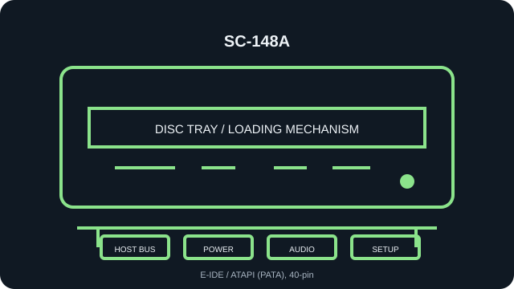

[ INDIVIDUAL COMPONENT // OPTICAL DRIVES ]
Samsung SC-148A
Read-only internal CD-ROM reader. Specifications below identify the exact model; nearby family variants may use a different interface, mechanism, firmware, or jumper layout.

IDENTIFICATION: Samsung SC-148A · verify the full label, suffix and revision against the cited manual before assigning interface, disc-format, firmware or installation characteristics.
Verified specifications
| Catalog subcategory | CD-ROM readers |
|---|---|
| Exact product identifier | Samsung SC-148A |
| Read speed | 48× maximum CD-ROM read; maximum rating is not a guarantee for a particular disc or transfer path. |
| Supported CD formats | CD-ROM Mode 1/2, CD-DA audio, CD-ROM XA, CD-I and Photo CD listed for the SC-140/148 family; read-only. |
| Host interface | E-IDE / ATAPI (PATA), 40-pin |
| Host and mechanical compatibility | Internal half-height 5.25-inch tray-loading drive; needs a 40-pin PATA/ATAPI host and standard power. Not a slimline or SATA drive. |
| Firmware / jumper caveat | Set MA/SL/CS from the SC-148A manual and the actual rear-panel legend. Confirm BIOS/OS ATAPI support; do not assume the SC-148B/C jumper layout or firmware is identical. Check SC-148A label/revision and current firmware; use updates only when explicitly matched to SC-148A, not SC-148B/C or the writer family. |
Installation and preservation notes
- Before connection, compare the unit label, interface connector and jumper markings with the model-specific manual. Do not power an uncertain pinout.
- For this PATA/ATAPI unit, assign one master and one slave per IDE channel, or follow Cable Select requirements on a compatible cable.
- Keep the original firmware identity, host adapter/BIOS, driver version, disc type, read-error log and verified image checksum together during preservation work.
- Use this record for read compatibility only: a CD-ROM reader is not evidence of disc-writing support.
Manufacturer, archive and manual sources
- Samsung — SC-148A CD-ROM User Manual (ManualsLib scan)Model-specific installation and jumper documentation.
- Samsung SC-140/148 User Guide (archived manual)Second SC-148A manual scan covering installation and device setup.
- Samsung SC-148A CD/CDR drive manual (manual archive)Additional model-specific manual scan.
Sources are model manuals, manufacturer archives or technical archives. A related-family manual is identified as such; verify the exact drive label/revision before applying its jumper or firmware instructions.